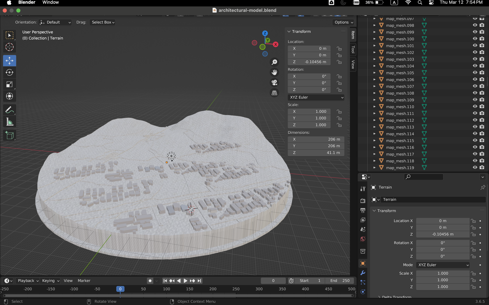
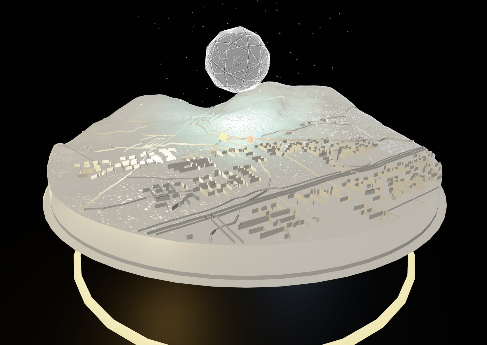
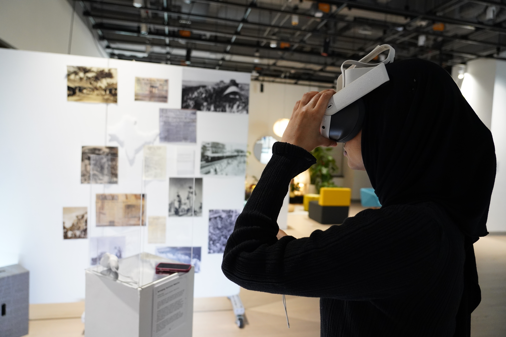

A browser-based Virtual Reality experience that reconstructs Saidpur Village
through WebXR, spatial audio, and oral history to explore how architecture,
memory, and identity intersect in the aftermath of the 1947 Partition.
Role
VR Experience Designer & Developer
Tools
A-Frame · WebXR · Three.js · GLSL · JavaScript · Web Audio API
Type
Immersive WebXR Experience
Overview
Reframing Partition Memories is a browser-based Virtual Reality experience
that reconstructs Saidpur Village, a historically layered settlement on the
outskirts of Islamabad, as an immersive space for engaging with the human
stories surrounding the 1947 Partition of India.
Instead of presenting history through dates, statistics, or maps, the
experience explores what Partition feels like when users stand inside the
spaces where these stories unfolded. By combining architectural
reconstruction, spatial audio, oral testimony, and immersive media, the
project transforms physical places into living archives of memory.
The project was developed entirely as a custom WebXR application using
A-Frame and Three.js rather than a conventional 360° tour, allowing users
to freely explore, interact with guided experiences, and move seamlessly
between reconstructed environments and real-world locations.
Why Saidpur Village
Saidpur Village was selected because of its unique historical layers,
architectural diversity, and ability to preserve traces of communities that
once lived together before Partition.
Unlike generalized historical recreations, grounding the experience within
a single real location allows visitors to understand history through place
rather than abstraction. Temples, residential streets, markets, and a
mosque coexist within walking distance, making the village itself an active
storyteller.
Layered History
Multiple political and demographic transitions remain visible through the
village's architecture and urban fabric.
Architectural Diversity
Religious, residential, and commercial spaces reveal the multicultural
character of the village before Partition.
Memory Through Place
Visitors experience history by moving through reconstructed spaces rather
than reading a chronological narrative.
Experience Architecture
Rather than functioning as a traditional VR tour, the experience is
structured as three interconnected layers. Each offers a different way of
understanding the same physical location, allowing users to move fluidly
between historical reconstruction, documentary media, and personal
testimony.
1. Cinematic Threshold
The experience opens with a holographic cinematic sequence introducing the
historical context before users gain full control. The introduction can be
skipped at any point, ensuring experienced users aren't forced through
lengthy exposition while still providing newcomers with meaningful context.
2. Interactive Architectural Reconstruction

The interactive 3D reconstruction of Saidpur Village used throughout the experience.
At the heart of the experience lies a detailed reconstruction of Saidpur
Village created as a GLTF environment. Users may freely explore using
desktop controls or VR locomotion, or choose to follow a guided experience
that leads them through ten historically significant locations.
Each stop contains interactive hotspots connecting the reconstructed model
to oral testimony, archival information, and immersive 360° media captured
from the real site.
3. Immersive 360° Experiences
Selecting a hotspot transports visitors directly into panoramic photo and
video captures of the actual location. These documentary spaces are layered
with spatial audio recordings collected from local residents, allowing users
to hear stories precisely where they occurred before returning seamlessly to
the reconstructed environment.
The Polyhedron Narrator

One of the project's defining features is a custom-designed holographic
polyhedron that serves as the experience's guide. Rather than using a human
avatar, the narrator appears as an abstract geometric object inspired by
Dürer's Melencolia I, emphasizing that no single individual owns
the collective memories being shared.
The polyhedron functions as a living vessel for oral testimony. It guides
users throughout the experience while visually responding to their movement,
creating a subtle emotional connection without relying on human
representation.
State Machine
A fully custom behavioural system governs every interaction using states for
movement, waiting, narration, arrival, and completion.
Reactive Behaviour
Glow intensity, particle density, and rotational movement dynamically adjust
based on the user's proximity.
Custom GLSL Shaders
The holographic appearance was created entirely with handwritten GLSL
vertex and fragment shaders layered with particle systems and orbital rings.
Guided Navigation
Smooth interpolation allows the narrator to travel naturally between ten
historically significant locations across the reconstructed village.
Technical Challenge — Solving WebXR Audio
01
Browser Audio Restrictions
Problem:
During active WebXR sessions, browsers frequently block playback from
HTMLAudioElement even after a user has already interacted with the page.
This causes narrated VR experiences to silently fail once a headset session
begins.
Solution:
I engineered a custom NarrationAudioManager using the Web Audio API.
Narration clips are preloaded into AudioBuffers, cached, and played through
AudioBufferSourceNodes connected to a unified audio pipeline. After a single
user gesture unlocks the AudioContext, narration continues reliably
throughout the VR experience without interruption.
Oral History as Spatial Content
The project combines oral history with physical geography by attaching every
testimony to the exact location where it occurred. Rather than reading a
linear transcript, visitors encounter memories naturally as they move
through the village.
Stories describe neighbourhoods, courtyards, markets, friendships, and
daily routines rather than abstract political events. This transforms the
village into a spatial archive where architecture itself becomes part of the
storytelling process.
By anchoring every narrative fragment to real coordinates, memory accumulates
through movement rather than scrolling text, encouraging exploration instead
of passive observation.
Technical Stack
The project was developed entirely for the browser using modern WebXR
technologies, enabling users to experience the work on desktop computers,
mobile devices, or VR headsets without installing a native application.
Engine
A-Frame 1.4.2 built on top of Three.js and WebXR.
3D Environment
Custom GLTF reconstruction of Saidpur Village optimized for real-time
browser rendering.
360° Media
Panoramic photo and video environments with cross-platform playback support.
Narrator System
Custom A-Frame component featuring handwritten GLSL shaders and procedural
animation.
Audio
Web Audio API with AudioBuffer caching for uninterrupted narration inside
WebXR sessions.
Interaction
Raycaster-based hotspot system with VR controller support and desktop
fallback controls.
Deployment
Single-page WebXR application running entirely inside the browser with no
framework dependency.
Design Principles
01
Memory is Spatial.
Stories become more meaningful when attached to physical locations rather
than presented as disconnected historical facts.
02
Technology Should Support the Story.
Every technical decision—from shaders to locomotion—was designed to
strengthen immersion without distracting from the historical narrative.
03
Accessibility Matters.
The experience gracefully scales from desktop browsers to fully immersive VR
headsets so the project remains accessible regardless of hardware ownership.
04
Multiple Perspectives.
The same place is presented simultaneously as architecture, documentary
media, and personal testimony, encouraging users to construct their own
understanding of history.
05
Immersion Should Never Become Friction.
Every onboarding step, cinematic, and guided interaction can be skipped,
allowing visitors to remain in control of their own experience.
Role & Contribution

I independently designed and developed the entire experience, including the
scene architecture, interaction systems, guided tour framework, custom
polyhedron narrator, shader development, WebXR audio pipeline, UI, spatial
interaction design, and integration of oral testimonies into the virtual
environment.
The project required balancing immersive experience design, front-end
engineering, historical research, UX design, and technical problem solving
to create a cohesive interactive narrative.
Reflection
This project challenged me to think about virtual reality not simply as a
visual medium, but as a way of communicating memory through space.
Developing the experience reinforced how interaction design, storytelling,
and software engineering can work together to make history feel immediate
rather than distant.
More importantly, it demonstrated that immersive technology can preserve
local histories in ways that traditional media cannot. By allowing users to
walk through reconstructed environments while listening to personal
testimonies, architecture itself becomes part of the storytelling process.
Gallery
Additional screenshots and videos from the WebXR experience.